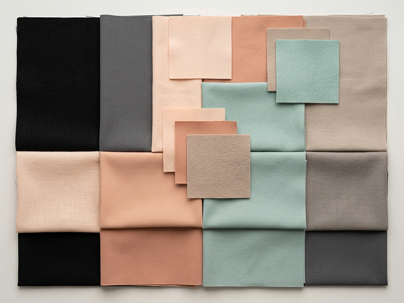
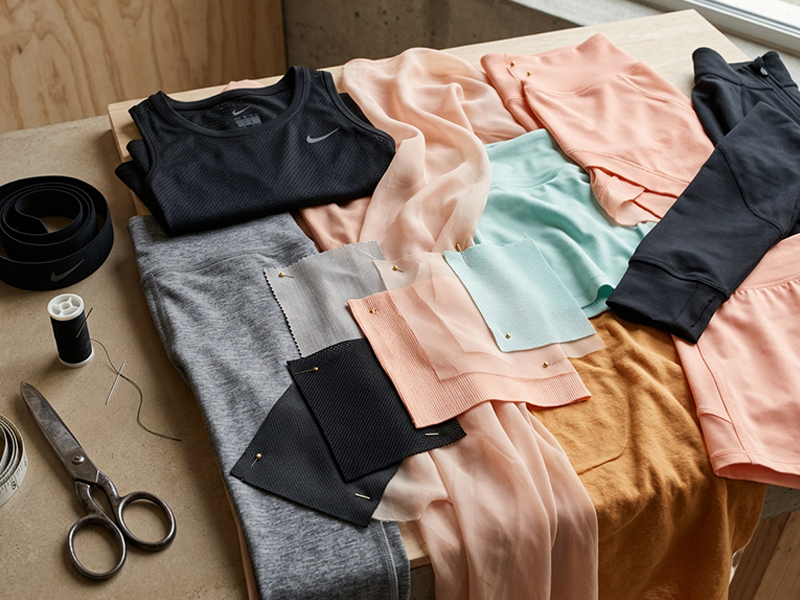
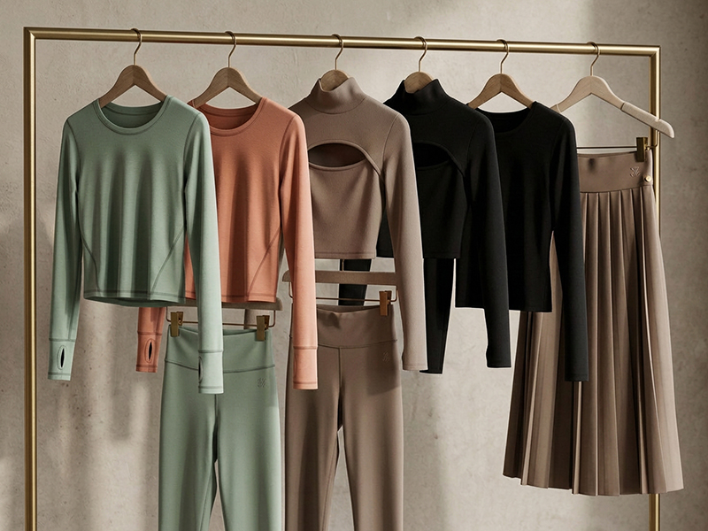
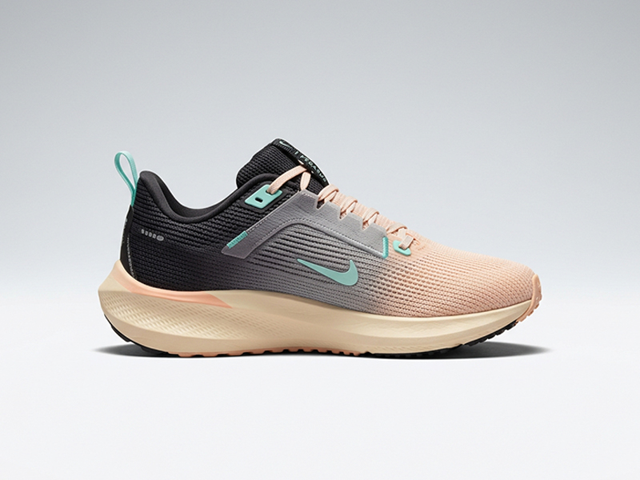

Theoretical · Apparel · Color
NIKE WOMEN'S FALL
Seasonal Color & Apparel Concept · Self-Initiated





Color Story
Black · Slate · Peach · Blush
Seafoam · Warm Stone · Taupe
Palette built from quiet confidence —
earthy neutrals warmed by skin-adjacent tones,
lifted with a single cool accent.
Seafoam · Warm Stone · Taupe
Palette built from quiet confidence —
earthy neutrals warmed by skin-adjacent tones,
lifted with a single cool accent.
A self-initiated fall concept for Nike Women's, built to show how color, culture, and product work as one system. The process mirrors real in-house development: cultural research, moodboarding, palette building, graphic direction, and product application.
The goal was to show the full arc of thinking, not just polished mockups, but the decisions behind them. Why this palette. Why this material direction. Why these graphics on these silhouettes. The same decision-making that turns inspiration into product people actually buy and wear.